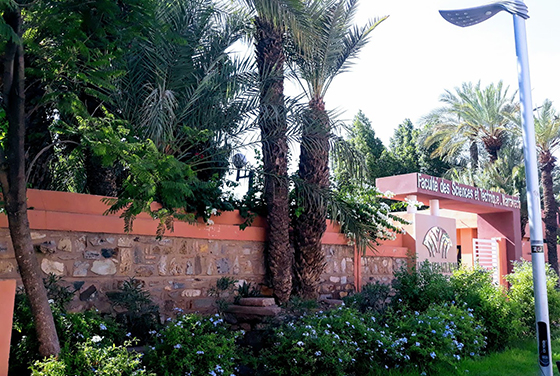

Faculté des Sciences et Techniques de Guéliz (FSTG) est un établissement public d'enseignement supérieur et de recherche scientifique situé à Marrakech, au Maroc. Elle est rattachée à l'Université Cadi Ayyad (UCAM).
Découvrez les domaines de la programmation et du développement logiciel.
Découvrez la sécurité des systèmes informatiques et des réseaux.
Découvrez les domaines de l'électronique, de l'énergie et de l'automatique.
Explorez les applications de la physique dans les sciences et les technologies.